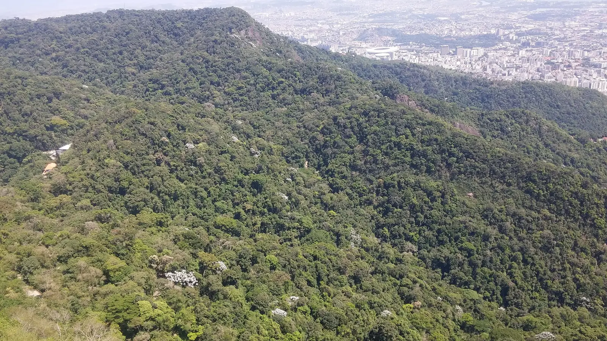
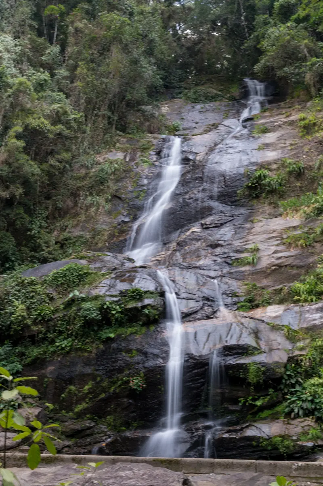
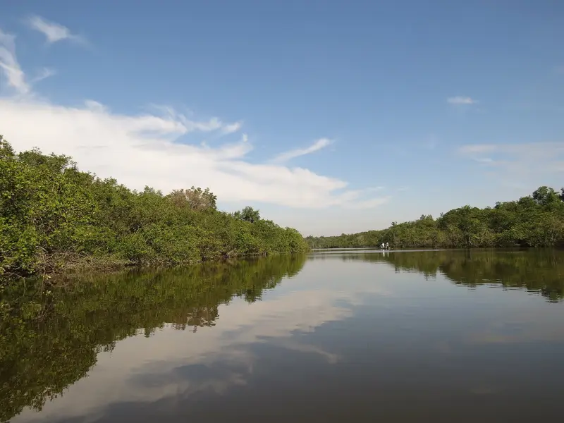

Licenciamento ambiental
Licenças prévia, de instalação e de operação, licenças simplificadas e por adesão, no INEA e nas prefeituras.
Meio ambiente | Engenharia | Estratégia
A Origem Consultoria Ambiental presta serviços de licenciamento, renovação de licenças, regularização e, quando necessário, defesa técnica em autos de infração. Conduzimos as demandas técnicas junto ao INEA, às prefeituras e ao IBAMA, para que sua empresa mantenha o foco na própria atividade.
Soluções para um amanhã mais sólido
Do presente
ao futuro,
com propósito.
Natureza
Conhecimento
Estratégia
Resultados
A Origem Consultoria Ambiental foi constituída com o propósito de conciliar desenvolvimento econômico e proteção ambiental, convertendo exigências legais em soluções técnicas viáveis para as empresas.
Atuamos em consultoria ambiental, licenciamento, regularização e gestão ambiental, com rigor técnico, visão estratégica e compromisso com a segurança regulatória e operacional de nossos clientes.
Como podemos atender
Licenciamento prévio: enquadramento da atividade, elaboração dos estudos e requerimento da licença no órgão competente.
Licenciamento →Diagnóstico ambiental da empresa: licenças, condicionantes, cadastros obrigatórios e prazos de renovação.
Diagnóstico →Análise técnica do auto, defesa técnica, recurso e pedido de conversão de multa, com controle rigoroso dos prazos.
Autos e recursos →Novidade no RJ
O Decreto estadual 50.473/2026, publicado em 16/09/2026, adaptou o licenciamento do Rio de Janeiro à Lei Geral do Licenciamento Ambiental (Lei federal 15.190/2025). Entre as mudanças:
Fonte: texto do Decreto estadual 50.473/2026 e análises publicadas em setembro de 2026 (links em Fontes). A aplicação depende da atividade e do porte de cada empreendimento; a Origem realiza o enquadramento técnico.
Avaliar o caso da minha empresaO que fazemos
Licenças prévia, de instalação e de operação, licenças simplificadas e por adesão, no INEA e nas prefeituras.
Gestão dos prazos de validade e do cumprimento das condicionantes, prevenindo o vencimento da licença.
Atividades em operação sem licença ou com licença vencida: definição do caminho de regularização, inclusive pela nova Licença de Operação Corretiva.
Cadastro Técnico Federal do IBAMA e relatório anual de atividades (RAPP), entre outras obrigações periódicas.
Pedidos de outorga de uso da água junto ao INEA e acompanhamento do controle de efluentes.
Plano de Gerenciamento de Resíduos Sólidos (PGRS) e controle do manifesto de transporte de resíduos (MTR).
Laudos técnicos, Projeto de Recuperação de Área Degradada (PRAD) e acompanhamento da recuperação.
Defesa técnica do auto, recurso, conversão de multa em serviços ambientais e pedido de desembargo.
Como trabalhamos
A empresa apresenta a situação por WhatsApp ou e-mail: atividade, endereço e documentos disponíveis.
Verificamos o enquadramento, o órgão competente, as licenças existentes e os prazos em curso.
Elaboração e protocolo de estudos, requerimentos, defesas e recursos no sistema do órgão, com comprovante.
Monitoramento do processo e dos prazos de validade, com comunicação de cada movimentação ao cliente.

Da origem
ao impacto
positivo.
Meio ambiente é o nosso ponto de partida.


Conhecimento
que transforma
realidades.
Planejamento
Regularização
Resultados
Autos de infração e recursos
A Origem realiza a análise técnica do auto, prepara a defesa técnica e acompanha o processo administrativo no IBAMA, no INEA e nos municípios: impugnação, recurso, conversão de multa e regularização da atividade, tratando a origem do problema para prevenir reincidências.
Auto de infração não é condenação. Cabe defesa e recurso, e o valor indicado no auto não é dano nem valor pago.
Solicitar análise do autoOs prazos dependem do órgão que lavrou o auto e contam a partir da ciência da autuação. Confira sempre o prazo indicado na própria notificação.
| Etapa | Federal (IBAMA) | Estadual (INEA/RJ) |
|---|---|---|
| Defesa ou impugnação | 20 dias da ciência Lei 9.605/1998, art. 71, I; Decreto 6.514/2008, art. 113 | 15 dias da intimação Lei estadual 3.467/2000; Decreto estadual 46.619/2019, art. 60 |
| Recurso | 20 dias da decisão condenatória Lei 9.605/1998, art. 71, III | 15 dias da intimação, recurso único Lei 3.467/2000, art. 25; Decreto estadual 48.690/2023, art. 61 |
| Contagem | Dias corridos, conforme a norma federal | Dias úteis desde 12/09/2022 Lei 3.467/2000, art. 28, na redação da Lei 9.789/2022 |
| Conversão da multa | Pode ser pedida até as alegações finais. Desconto de 40% (direta) ou 60% (indireta) se pedida com a defesa; 35% ou 50% até as alegações finais Decreto 6.514/2008, arts. 142, 142-A e 143, na redação do Decreto 11.373/2023 | Parcelamento previsto em lei estadual Lei estadual 5.351/2008; Decreto estadual 42.049/2009 |
A defesa no processo administrativo pode ser feita pela própria empresa ou por quem ela indicar; a assistência de advogado é opcional nessa fase (Lei 9.784/1999, art. 3º, IV). Quando o caso pede medida judicial, indicamos advogado parceiro.
Este quadro é informativo e não substitui a análise do caso. Normas conferidas em 06/11/2026 nas fontes listadas em Fontes e método.
Consulta oficial
As consultas abaixo são mantidas pelos próprios órgãos. Caso identifique um auto em nome de sua empresa, envie-nos o número para verificação do prazo e da situação do processo.
Consulta pública por CPF ou CNPJ, mantida pelo IBAMA.
Abrir consulta ↗Base completa de autos de infração em formato aberto, atualizada pelo IBAMA.
Abrir base ↗Fiscalização, pós-licença, Diário Eletrônico do INEA, e-SIC e ouvidoria.
Abrir site ↗Mais que projetos,
propósitos.
Soluções que conectam
territórios, pessoas
e oportunidades.
Contato
Preencha os campos abaixo; o WhatsApp será aberto com a mensagem já redigida. Nenhum dado é armazenado neste site: o envio ocorre somente quando a mensagem é confirmada no seu WhatsApp.
Dúvidas frequentes
Não. Depende do tipo de atividade, do porte e do potencial poluidor. No RJ, o enquadramento segue as regras estaduais (Decreto estadual 50.473/2026 e normas do INEA) e, quando o impacto é local, a licença pode ser da prefeitura (Lei Complementar 140/2011, art. 9º, XIV). A Origem realiza esse enquadramento.
Depende do impacto da atividade. Atividades de impacto local são licenciadas pelo município, se ele estiver habilitado; as demais, em regra, pelo INEA. Algumas são federais (IBAMA).
Sim. Instalar ou operar atividade potencialmente poluidora sem licença é infração administrativa (Decreto 6.514/2008, art. 66) e também crime (Lei 9.605/1998, art. 60). A regularização prévia à fiscalização é o caminho mais seguro.
O prazo está indicado na própria licença. As novas regras estaduais preveem renovação automática para algumas atividades de baixo e médio impacto, nas hipóteses que o INEA definir. A Origem realiza o controle desses prazos.
Não. O auto inicia o processo administrativo. O autuado tem direito a defesa e a recurso, e a multa somente se torna definitiva após o julgamento.
Depende da fase do processo. Ainda pode haver alegações finais, recurso, pedido de conversão, parcelamento ou questões como a prescrição (Lei 9.873/1999). Recomenda-se uma análise do processo.
Na esfera federal, a conversão da multa em serviços de preservação, melhoria e recuperação ambiental está prevista no Decreto 6.514/2008, com descontos maiores quando o pedido é feito junto com a defesa.
Que o IBAMA publicou em dados abertos um auto em nome daquele CNPJ. Recomenda-se conferir o número do auto e a situação do processo. Eventual erro de dados também pode ser apontado na defesa.
O nome escrito no auto não bate com a razão social atual na Receita. Pode ser troca de nome da empresa ou erro de digitação do CNPJ no auto. Só a conferência do processo confirma qual é o caso.
Transparência